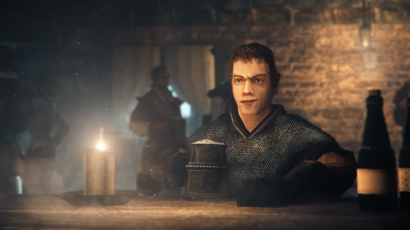

Wstęp
Marvin to główny bohater Kronik Myrtany modyfikacji gry Gothic II Noc Kruka, stworzonej przez zespół The Chronicles of Myrtana TeamMarvin jest młodą osobą która przybyła z wyspy Londram na wyspę Archolos uciekając przed wojną z orkami
Historia
Przed rozpoczęciem akcji
Bohater mieszkał ze swoimi rodzicami i bratem Jonem na Londram. Po śmierci swoich rodziców i wzrastającym zagrożeniu ze strony orków wraz z bratem postanowił opuścić rodzinną wyspę szukając schronienia na Archolos, gdzie mieszkał już wujek rodzeństwa - Kurt. Podróż statkiem nie była tanią, dlatego w celu przekupienia kapitana bracia ukradli amulet z grobu własnej matki.
W czasie rozgrywki
Po dotarciu na wyspę w drodze do wioski Silbach, gdzie zamieszkuje
Kurt, brat Marvina John zostaje ukąszony przez krwiopijcę rzecznego.
Bracia odnajdują w Silbach swojego wuja, który pomaga Marvinowi w
opiece nad rannym bratem. Jednak po jakimś czasie John zostaje
porwany.
Dalsze losy braci zależą od wyborów gracza.
Ścieżki rozwoju postaci
| Gildia | Broń w zwarciu | Broń długodystansowa |
|---|---|---|
| Straż miejska | Wojownik | Kusznik |
| Araxos | Szermierz | Tropiciel |
Ciekawostki
Po wpisaniu kodu Marvin w oknie umiejętności bohater wypowiada kwestię
„Tak, to ja”
Spoiler